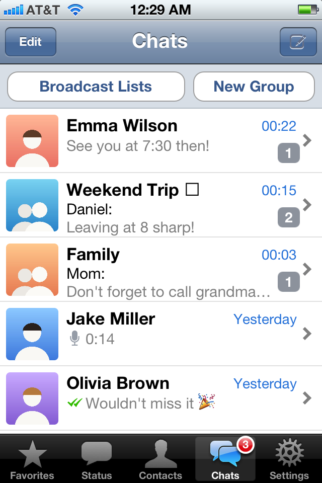
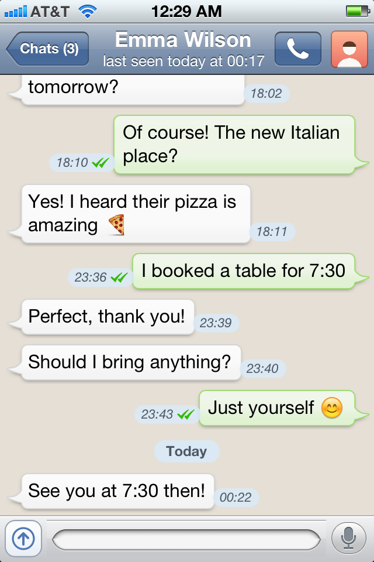
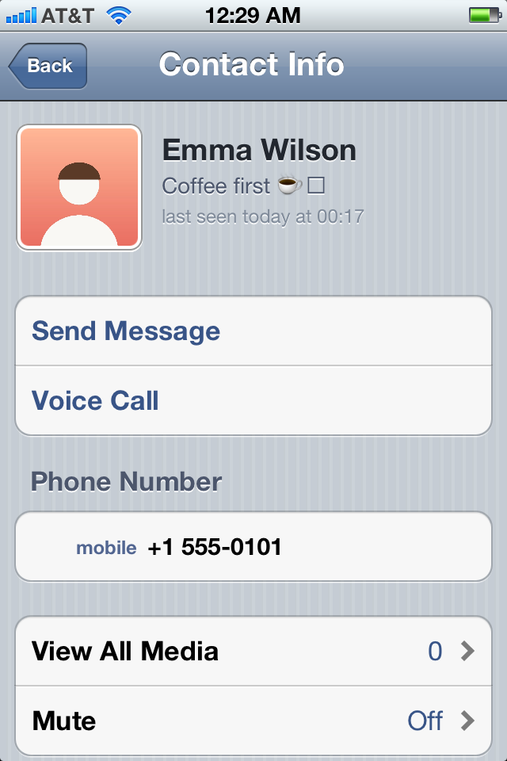

WA Classic
WhatsApp is back on iOS 6.
And iOS 5. And iOS 4.

Green bubbles, the doodle wallpaper, the glossy bars. WA Classic looks and feels like WhatsApp 2.10, the version that came with iOS 6. But it talks to today's WhatsApp, so all your chats and groups are there.
See which iPhones work
Send photos and videos straight from the camera or your albums, and record voice messages with a tap. Everything you receive plays right on the old iPhone, the bridge converts it for you.
Call your contacts with the look of the iOS 6 Phone app. Incoming calls ring on the lock screen, and missed calls show up right in the chat.
Banners, lock screen notifications, sounds and badges, even when WA Classic is closed. Muted chats stay quiet. Profile pictures, last seen, typing and your own status are all there too.

The old WhatsApp app can't connect anymore. WA Classic uses a small program, the bridge, that runs on a computer in your home and is linked to your account like WhatsApp Web. Your iPhone only ever talks to your own bridge. No one else's server is in between.
Set up your bridgeWhatsApp, as always. It stays the main device.
A Mac, PC, Raspberry Pi or NAS at home, linked like WhatsApp Web.
WA Classic, at home or away.
iOS 4.3
iOS 5.1.1 and iOS 6
iOS 6
No subscription, no ads, nothing to buy.
The app and the bridge, under the GPL-3.0.
Requires a jailbroken iPhone and a computer at home that stays on (Mac, Windows PC, Raspberry Pi or NAS with Docker). Away from home needs a port forwarding on your router.
WA Classic is an unofficial client and not affiliated with, endorsed by or connected to WhatsApp or Meta. Using it may break WhatsApp's terms of service; your account could be banned. Messages are stored unencrypted on the computer that runs the bridge.
WA Classic was developed by aronsz26 with the help of AI, using Claude Code by Anthropic. iPhone pictures on this page are drawings. WhatsApp is a trademark of WhatsApp LLC.